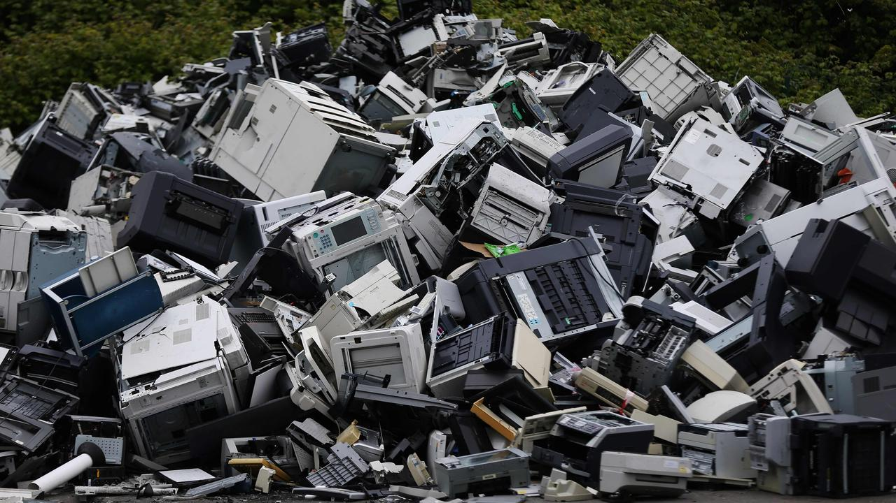
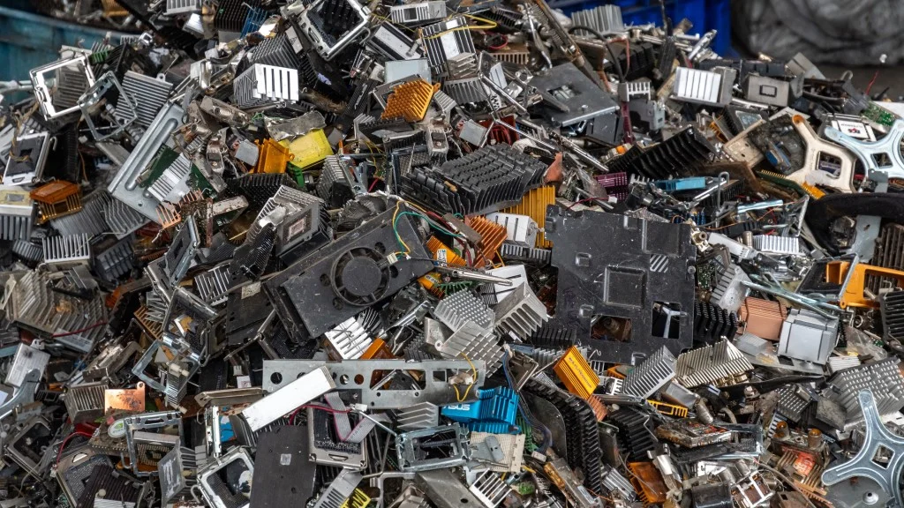
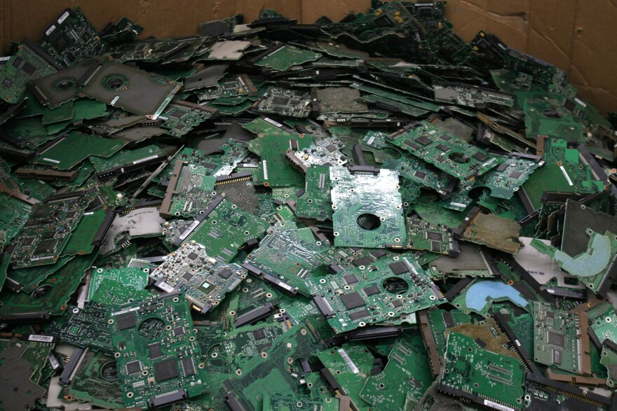
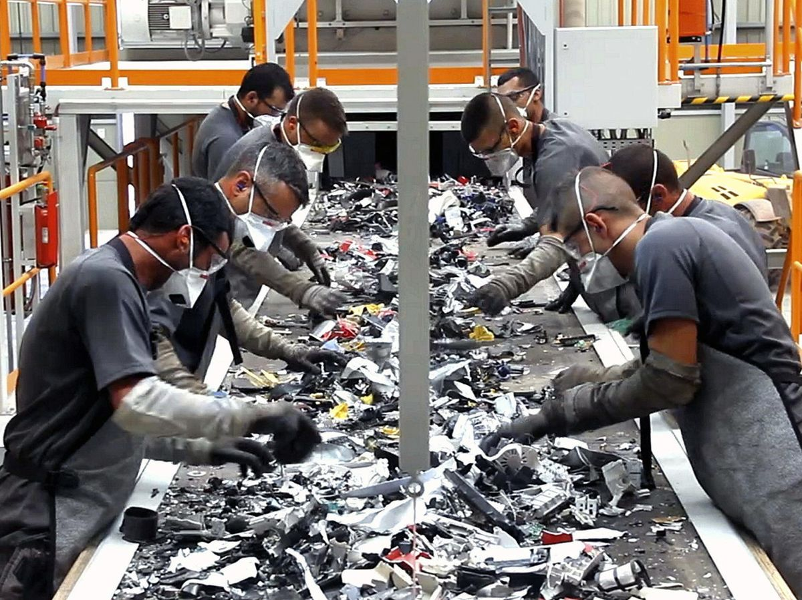

1. Introducción
Los residuos informáticos o residuos electrónicos (e-waste) son dispositivos tecnológicos que ya no se utilizan o han quedado obsoletos, como computadoras, teléfonos móviles, impresoras y monitores.
El rápido avance de la tecnología provoca que cada año se generen millones de toneladas de basura electrónica en todo el mundo.
2. Ejemplo de residuos informáticos

Los residuos informáticos incluyen:
- Computadoras viejas
- Monitores dañados
- Teléfonos móviles antiguos
- Teclados y ratones
- Cables y cargadores
- Impresoras y escáneres
3. Componentes electrónicos

Los dispositivos electrónicos contienen distintos materiales:
Materiales valiosos
- Oro
- Plata
- Cobre
- Aluminio
Materiales peligrosos
- Plomo
- Mercurio
- Cadmio
Si no se gestionan correctamente pueden contaminar el medio ambiente.
4. Impacto ambiental

Los residuos electrónicos pueden causar:
- Contaminación del suelo
- Contaminación del agua
- Contaminación del aire
- Problemas de salud en las personas
5. Reciclaje de residuos informáticos

El reciclaje permite:
- Recuperar materiales valiosos
- Reducir la contaminación
- Disminuir la cantidad de basura tecnológica
- Aprovechar recursos naturales
6. Cómo reducir los residuos electrónicos
Algunas formas de ayudar son:
- Reparar dispositivos antes de tirarlos
- Donar computadoras que aún funcionen
- Reciclar en centros especializados
- Comprar dispositivos más duraderos
7. Conclusión
Los residuos informáticos son uno de los problemas ambientales que más crece en el mundo. Una correcta gestión mediante reutilización, reparación y reciclaje es fundamental para proteger el medio ambiente.
Referencias
- Naciones Unidas – Global E-waste Monitor
- Organización Mundial de la Salud (OMS) – Electronic Waste and Children's Health
- Parlamento Europeo – Residuos electrónicos en la UE
- Wikipedia – Residuos electrónicos